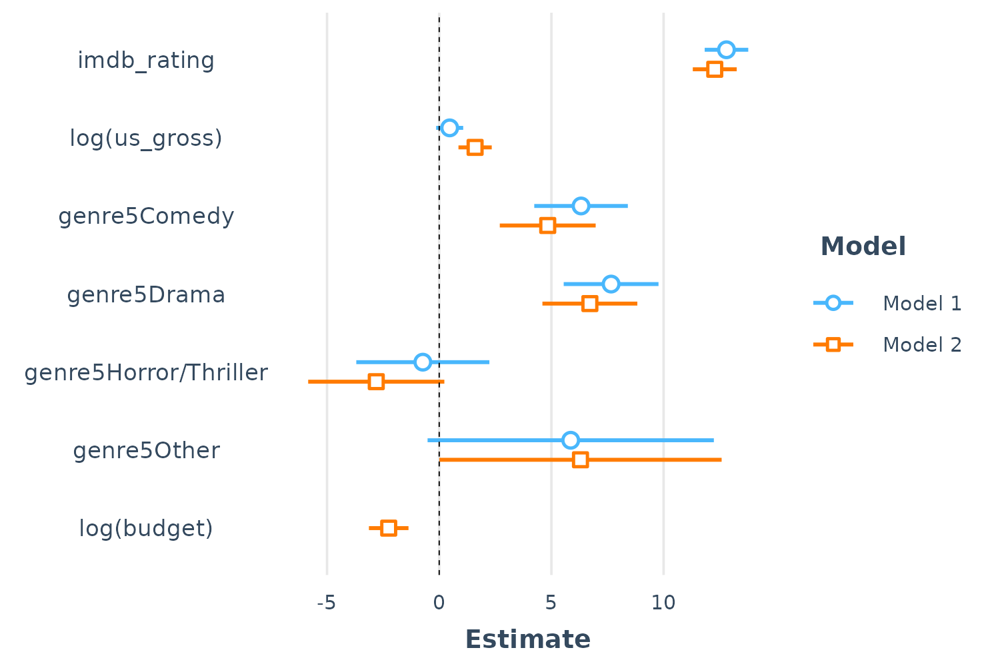
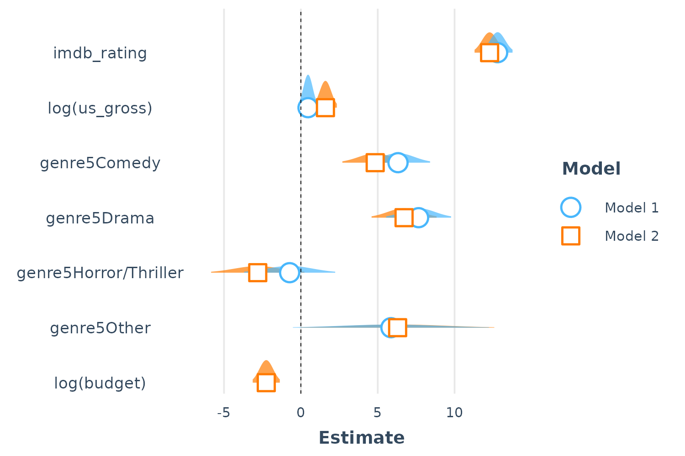
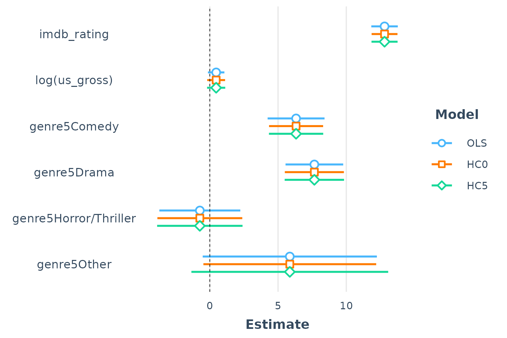

Tools for summarizing and visualizing regression models
Jacob Long
2022-04-11
Source:vignettes/summ.Rmd
summ.RmdThe support jtools provides for helping to understand and report the results of regression models falls into a few broad categories:
- Generating flexible table output in the console that includes multiple standard error specifications, toggles for confidence intervals, VIFs, p values, and so on (
summ) - Plotting predicted data from models to aid in substantive interpretation and understanding model fit, including models with interactions (
effect_plot; see other vignette) - Plotting regression coefficients and their uncertainty in a visually appealing way (
plot_coefs,plot_summs) - Exporting regression summaries as tables in PDF/LaTeX and Word formats for publication (
export_summs)
summ
When sharing analyses with colleagues unfamiliar with R, I found that the output generally was not clear to them. Things were even worse if I wanted to give them information that is not included in the summary like robust standard errors, scaled coefficients, and VIFs since the functions for estimating these don’t append them to a typical regression table. After creating output tables “by hand” on multiple occasions, I thought it best to pack things into a reusable function: It became summ.
With no user-specified arguments except a fitted model, the output of summ looks like this:
# Fit model
states <- as.data.frame(state.x77)
fit <- lm(Income ~ Frost + Illiteracy + Murder, data = states)
summ(fit)## MODEL INFO:
## Observations: 50
## Dependent Variable: Income
## Type: OLS linear regression
##
## MODEL FIT:
## F(3,46) = 4.05, p = 0.01
## R² = 0.21
## Adj. R² = 0.16
##
## Standard errors: OLS
## ----------------------------------------------------
## Est. S.E. t val. p
## ----------------- --------- -------- -------- ------
## (Intercept) 5111.10 416.58 12.27 0.00
## Frost -1.25 2.11 -0.59 0.56
## Illiteracy -610.71 213.14 -2.87 0.01
## Murder 23.07 30.94 0.75 0.46
## ----------------------------------------------------Like any output, this one is somewhat opinionated — some information is shown that perhaps not everyone would be interested in, some may be missing. That, of course, was the motivation behind the creation of the function; I didn’t like the choices made by R’s core team with summary!
Here’s a quick (not comprehensive) list of functionality supported by summ:
- Summaries for
lm,glm,svyglm(survey),merMod(lme4), andrq(quantreg) models. - Variable scaling and centering
- Robust standard errors (for
lmandglmplusquantreg’s built-in options forrqmodels) - Confidence intervals, VIFs, and partial correlations (
lmonly) can optionally be included in the output - p-values can be dropped from the output
- R^2 (
lm, linearsvyglm), pseudo-R^2 (glm,merMod), R^1 (rq), and other model fit statistics are calculated and reported. These can also be suppressed if you don’t want them. - Ability to choose defaults for many options using
set_summ_defaultsto reduce the need to do redundant typing in interactive use.
Model types supported are lm, glm, svyglm, merMod, and rq, though not all will be reviewed in detail here.
Note: The output in this vignette will mimic how it looks in the R console, but if you are generating your own RMarkdown documents and have kableExtra installed, you’ll instead get some prettier looking tables like this:
summ(fit)| Observations | 50 |
| Dependent variable | Income |
| Type | OLS linear regression |
| F(3,46) | 4.05 |
| R² | 0.21 |
| Adj. R² | 0.16 |
| Est. | S.E. | t val. | p | |
|---|---|---|---|---|
| (Intercept) | 5111.10 | 416.58 | 12.27 | 0.00 |
| Frost | -1.25 | 2.11 | -0.59 | 0.56 |
| Illiteracy | -610.71 | 213.14 | -2.87 | 0.01 |
| Murder | 23.07 | 30.94 | 0.75 | 0.46 |
| Standard errors: OLS |
You can force knitr to give the console style of output by setting the chunk option render = 'normal_print'.
Report robust standard errors
One of the problems that originally motivated the creation of this function was the desire to efficiently report robust standard errors — while it is easy enough for an experienced R user to calculate robust standard errors, there are not many simple ways to include the results in a regression table as is common with the likes of Stata, SPSS, etc.
Robust standard errors require the user to have the sandwich package installed. It does not need to be loaded.
There are multiple types of robust standard errors that you may use, ranging from “HC0” to “HC5”. Per the recommendation of the authors of the sandwich package, the default is “HC3” so this is what you get if you set robust = TRUE. Stata’s default is “HC1”, so you may want to use that if your goal is to replicate Stata analyses. To toggle the type of robust errors, provide the desired type as the argument to robust.
summ(fit, robust = "HC1")## MODEL INFO:
## Observations: 50
## Dependent Variable: Income
## Type: OLS linear regression
##
## MODEL FIT:
## F(3,46) = 4.05, p = 0.01
## R² = 0.21
## Adj. R² = 0.16
##
## Standard errors: Robust, type = HC1
## ----------------------------------------------------
## Est. S.E. t val. p
## ----------------- --------- -------- -------- ------
## (Intercept) 5111.10 492.45 10.38 0.00
## Frost -1.25 2.62 -0.48 0.63
## Illiteracy -610.71 183.31 -3.33 0.00
## Murder 23.07 33.90 0.68 0.50
## ----------------------------------------------------Robust standard errors can also be calculated for generalized linear models (i.e., glm objects) though there is some debate whether they should be used for models fit iteratively with non-normal errors. In the case of svyglm, the standard errors that package calculates are already robust to heteroskedasticity, so any argument to robust will be ignored with a warning.
You may also specify with cluster argument the name of a variable in the input data or a vector of clusters to get cluster-robust standard errors.
Standardized/scaled coefficients
Some prefer to use scaled coefficients in order to avoid dismissing an effect as “small” when it is just the units of measure that are small. scaled betas are used instead when scale = TRUE. To be clear, since the meaning of “standardized beta” can vary depending on who you talk to, this option mean-centers the predictors as well but does not alter the dependent variable whatsoever. If you want to scale the dependent variable too, just add the transform.response = TRUE argument.
summ(fit, scale = TRUE)## MODEL INFO:
## Observations: 50
## Dependent Variable: Income
## Type: OLS linear regression
##
## MODEL FIT:
## F(3,46) = 4.05, p = 0.01
## R² = 0.21
## Adj. R² = 0.16
##
## Standard errors: OLS
## ----------------------------------------------------
## Est. S.E. t val. p
## ----------------- --------- -------- -------- ------
## (Intercept) 4435.80 79.77 55.61 0.00
## Frost -65.19 109.69 -0.59 0.56
## Illiteracy -372.25 129.91 -2.87 0.01
## Murder 85.18 114.22 0.75 0.46
## ----------------------------------------------------
##
## Continuous predictors are mean-centered and scaled by 1 s.d.You can also choose a different number of standard deviations to divide by for standardization. Andrew Gelman has been a proponent of dividing by 2 standard deviations; if you want to do things that way, give the argument n.sd = 2.
summ(fit, scale = TRUE, n.sd = 2)## MODEL INFO:
## Observations: 50
## Dependent Variable: Income
## Type: OLS linear regression
##
## MODEL FIT:
## F(3,46) = 4.05, p = 0.01
## R² = 0.21
## Adj. R² = 0.16
##
## Standard errors: OLS
## ----------------------------------------------------
## Est. S.E. t val. p
## ----------------- --------- -------- -------- ------
## (Intercept) 4435.80 79.77 55.61 0.00
## Frost -130.38 219.37 -0.59 0.56
## Illiteracy -744.50 259.83 -2.87 0.01
## Murder 170.36 228.43 0.75 0.46
## ----------------------------------------------------
##
## Continuous predictors are mean-centered and scaled by 2 s.d.Note that this is achieved by refitting the model. If the model took a long time to fit initially, expect a similarly long time to refit it.
Mean-centered variables
In the same vein as the standardization feature, you can keep the original scale while still mean-centering the predictors with the center = TRUE argument. As with scale, this is not applied to the response variable unless transform.response = TRUE.
summ(fit, center = TRUE)## MODEL INFO:
## Observations: 50
## Dependent Variable: Income
## Type: OLS linear regression
##
## MODEL FIT:
## F(3,46) = 4.05, p = 0.01
## R² = 0.21
## Adj. R² = 0.16
##
## Standard errors: OLS
## ----------------------------------------------------
## Est. S.E. t val. p
## ----------------- --------- -------- -------- ------
## (Intercept) 4435.80 79.77 55.61 0.00
## Frost -1.25 2.11 -0.59 0.56
## Illiteracy -610.71 213.14 -2.87 0.01
## Murder 23.07 30.94 0.75 0.46
## ----------------------------------------------------
##
## Continuous predictors are mean-centered.Confidence intervals
In many cases, you’ll learn more by looking at confidence intervals than p-values. You can request them from summ.
summ(fit, confint = TRUE, digits = 3)## MODEL INFO:
## Observations: 50
## Dependent Variable: Income
## Type: OLS linear regression
##
## MODEL FIT:
## F(3,46) = 4.049, p = 0.012
## R² = 0.209
## Adj. R² = 0.157
##
## Standard errors: OLS
## --------------------------------------------------------------------
## Est. 2.5% 97.5% t val. p
## ----------------- ---------- ----------- ---------- -------- -------
## (Intercept) 5111.097 4272.572 5949.621 12.269 0.000
## Frost -1.254 -5.502 2.993 -0.594 0.555
## Illiteracy -610.715 -1039.739 -181.691 -2.865 0.006
## Murder 23.074 -39.206 85.354 0.746 0.460
## --------------------------------------------------------------------You can adjust the width of the confidence intervals, which are by default 95% CIs.
summ(fit, confint = TRUE, ci.width = .5)## MODEL INFO:
## Observations: 50
## Dependent Variable: Income
## Type: OLS linear regression
##
## MODEL FIT:
## F(3,46) = 4.05, p = 0.01
## R² = 0.21
## Adj. R² = 0.16
##
## Standard errors: OLS
## ---------------------------------------------------------------
## Est. 25% 75% t val. p
## ----------------- --------- --------- --------- -------- ------
## (Intercept) 5111.10 4827.88 5394.31 12.27 0.00
## Frost -1.25 -2.69 0.18 -0.59 0.56
## Illiteracy -610.71 -755.62 -465.81 -2.87 0.01
## Murder 23.07 2.04 44.11 0.75 0.46
## ---------------------------------------------------------------Removing p values
You might also want to drop the p-values altogether.
summ(fit, confint = TRUE, pvals = FALSE)## MODEL INFO:
## Observations: 50
## Dependent Variable: Income
## Type: OLS linear regression
##
## MODEL FIT:
## F(3,46) = 4.05, p = 0.01
## R² = 0.21
## Adj. R² = 0.16
##
## Standard errors: OLS
## ---------------------------------------------------------
## Est. 2.5% 97.5% t val.
## ----------------- --------- ---------- --------- --------
## (Intercept) 5111.10 4272.57 5949.62 12.27
## Frost -1.25 -5.50 2.99 -0.59
## Illiteracy -610.71 -1039.74 -181.69 -2.87
## Murder 23.07 -39.21 85.35 0.75
## ---------------------------------------------------------Remember that you can omit p-values regardless of whether you have requested confidence intervals.
Generalized and Mixed models
summ has been expanding its range of supported model types. glm was a natural extension and will cover most use cases.
## MODEL INFO:
## Observations: 32
## Dependent Variable: vs
## Type: Generalized linear model
## Family: binomial
## Link function: logit
##
## MODEL FIT:
## χ²(2) = 18.51, p = 0.00
## Pseudo-R² (Cragg-Uhler) = 0.59
## Pseudo-R² (McFadden) = 0.42
## AIC = 31.35, BIC = 35.75
##
## Standard errors: MLE
## ------------------------------------------------
## Est. S.E. z val. p
## ----------------- ------- ------ -------- ------
## (Intercept) -7.76 4.00 -1.94 0.05
## drat -0.56 1.33 -0.42 0.67
## mpg 0.48 0.20 2.38 0.02
## ------------------------------------------------For exponential family models, especially logit and Poisson, you may be interested in getting the exponentiated coefficients rather than the linear estimates. summ can handle that!
summ(fitg, exp = TRUE)## MODEL INFO:
## Observations: 32
## Dependent Variable: vs
## Type: Generalized linear model
## Family: binomial
## Link function: logit
##
## MODEL FIT:
## χ²(2) = 18.51, p = 0.00
## Pseudo-R² (Cragg-Uhler) = 0.59
## Pseudo-R² (McFadden) = 0.42
## AIC = 31.35, BIC = 35.75
##
## Standard errors: MLE
## ------------------------------------------------------------
## exp(Est.) 2.5% 97.5% z val. p
## ----------------- ----------- ------ ------- -------- ------
## (Intercept) 0.00 0.00 1.09 -1.94 0.05
## drat 0.57 0.04 7.77 -0.42 0.67
## mpg 1.61 1.09 2.39 2.38 0.02
## ------------------------------------------------------------Standard errors are omitted for odds ratio estimates since the confidence intervals are not symmetrical.
You can also get summaries of merMod objects, the mixed models from the lme4 package.
## MODEL INFO:
## Observations: 180
## Dependent Variable: Reaction
## Type: Mixed effects linear regression
##
## MODEL FIT:
## AIC = 1755.63, BIC = 1774.79
## Pseudo-R² (fixed effects) = 0.28
## Pseudo-R² (total) = 0.80
##
## FIXED EFFECTS:
## ---------------------------------------------------------
## Est. S.E. t val. d.f. p
## ----------------- -------- ------ -------- ------- ------
## (Intercept) 251.41 6.82 36.84 17.00 0.00
## Days 10.47 1.55 6.77 17.00 0.00
## ---------------------------------------------------------
##
## p values calculated using Satterthwaite d.f.
##
## RANDOM EFFECTS:
## ------------------------------------
## Group Parameter Std. Dev.
## ---------- ------------- -----------
## Subject (Intercept) 24.74
## Subject Days 5.92
## Residual 25.59
## ------------------------------------
##
## Grouping variables:
## ---------------------------
## Group # groups ICC
## --------- ---------- ------
## Subject 18 0.48
## ---------------------------Note that the summary of linear mixed models will omit p-values by default unless the package is installed for linear models. There’s no clear-cut way to derive p-values with linear mixed models and treating the t-values like you would for OLS models will lead to inflated Type 1 error rates. Confidence intervals are better, but not perfect. Kenward-Roger calculated degrees of freedom are fairly good under many circumstances and those are used by default when package is installed. Be aware that for larger datasets, this procedure can take a long time. See the documentation (?summ.merMod) for more info.
You also get an estimated model R-squared for mixed models using the Nakagawa & Schielzeth (2013) procedure with code adapted from the piecewiseSEM package.
effect_plot
Sometimes to really understand what your model is telling you, you need to see the kind of predictions it will give you. For that, you can use effect_plot, which does what it sounds like. There is a separate vignette available to explore all it can offer, but here’s a basic example with our linear model:
effect_plot(fit, pred = Illiteracy, interval = TRUE, plot.points = TRUE)
Now we’re really learning something about our model—and it looks like the linear fit is basically correct.
plot_summs and plot_coefs
When it comes time to share your findings, especially in talks, tables are often not the best way to capture people’s attention and quickly convey the results. Variants on what are known by some as “forest plots” have been gaining popularity for presenting regression results.
For that, jtools provides plot_summs and plot_coefs. plot_summs gives you a plotting interface to summ and allows you to do so with multiple models simultaneously (assuming you want to apply the same arguments to each model).
Here’s a basic, single-model use case.
plot_summs(fit)Note that the intercept is omitted by default because it often distorts the scale and generally isn’t of theoretical interest. You can change this behavior or omit other coefficients with the omit.coefs argument.
In the above example, the differing scales of the variables makes it kind of difficult to make a quick assessment. No problem, we can just use the tools built into summ for that.
plot_summs(fit, scale = TRUE)See? Now we have a better idea of how the uncertainty and magnitude of effect differs for these variables. Note that by default the width of the confidence interval is .95, but this can be changed with the ci_level argument. You can also add a thicker band to convey a narrow interval using the inner_ci_level argument:
plot_summs(fit, scale = TRUE, inner_ci_level = .9)
Another compelling use case for plot_summs is robust standard errors ( just use the robust argument).
Plot coefficient uncertainty as normal distributions
Most of our commonly used regression models make an assumption that the coefficient estimates are asymptotically normally distributed, which is how we derive our confidence intervals, p values, and so on. Using the plot.distributions = TRUE argument, you can plot a normal distribution along the width of your specified interval to convey the uncertainty. This is also great for didactic purposes.
While the common OLS model assumes a t distribution, I decided that they are visually sufficiently close that I have opted not to try to plot the points along a t distribution.
plot_summs(fit, scale = TRUE, plot.distributions = TRUE, inner_ci_level = .9)
Comparing model coefficients visually
Comparison of multiple models simultaneously is another benefit of plotting. This is especially true when the models are nested. Let’s fit a second model and compare.
fit2 <- lm(Income ~ Frost + Illiteracy + Murder + `HS Grad`,
data = states)
plot_summs(fit, fit2, scale = TRUE)
This is a classic case in which adding a new predictor causes another one’s estimate to get much closer to zero.
Doing this with plot.distributions = TRUE creates a nice effect:
plot_summs(fit, fit2, scale = TRUE, plot.distributions = TRUE)
By providing a list to summ arguments in plot_summs, you can compare results with different summ arguments (each item in the list corresponds to one model; the second list item to the second model, etc.). For instance, we can look at how the standard errors differ with different robust arguments:
plot_summs(fit, fit, fit, scale = TRUE, robust = list(FALSE, "HC0", "HC3"),
model.names = c("OLS", "HC0", "HC3"))
plot_coefs is very similar to plot_summs, but does not offer the features that summ does. The tradeoff, though, is that it allows for model types that summ does not — any model supported by tidy from the broom package should work. If you provide unsupported model types to plot_summs, it just passes them to plot_coefs.
Table output for Word and RMarkdown documents
Sometimes you really do want a table, but it can’t be standard R output. For that, you can use export_summs. It is a wrapper around huxtable’s huxreg function that will give you nice looking output if used in RMarkdown documents or, if requested, printed to a Word file. In the latter case, complicated models often need more fine-tuning in Word, but it gets you started.
Like plot_summs, export_summs is designed to give you the features available in summ, so you can request things like robust standard errors and variable scaling.
Here’s an example of what to expect in a document like this one:
export_summs(fit, fit2, scale = TRUE)| Model 1 | Model 2 | |
|---|---|---|
| (Intercept) | 4435.80 *** | 4435.80 *** |
| (79.77) | (70.06) | |
| Frost | -65.19 | -12.53 |
| (109.69) | (97.31) | |
| Illiteracy | -372.25 ** | -116.13 |
| (129.91) | (132.30) | |
| Murder | 85.18 | 110.76 |
| (114.22) | (100.54) | |
HS Grad
|
363.26 *** | |
| (94.97) | ||
| N | 50 | 50 |
| R2 | 0.21 | 0.40 |
| All continuous predictors are mean-centered and scaled by 1 standard deviation. *** p < 0.001; ** p < 0.01; * p < 0.05. | ||
When using RMarkdown, set results = 'asis' for the chunk with export_summs to get the right formatting for whatever type of output document (HTML, PDF, etc.)
To format the error statistics, simply put the statistics desired in curly braces wherever you want them in a character string. For example, if you want the standard error in parentheses, the argument would be "({std.error})", which is the default. Some other ideas:
"({statistic})", which gives you the test statistic in parentheses."({statistic}, p = {p.value})", which gives the test statistic followed by a “p =” p value all in parentheses. Note that you’ll have to pay special attention to rounding if you do this to keep cells sufficiently narrow."[{conf.low}, {conf.high}]", which gives the confidence interval in the standard bracket notation. You could also explicitly write the confidence level, e.g.,"95% CI [{conf.low}, {conf.high}]".
Here’s an example with confidence intervals instead of standard errors:
export_summs(fit, fit2, scale = TRUE,
error_format = "[{conf.low}, {conf.high}]")| Model 1 | Model 2 | |
|---|---|---|
| (Intercept) | 4435.80 *** | 4435.80 *** |
| [4275.23, 4596.37] | [4294.68, 4576.92] | |
| Frost | -65.19 | -12.53 |
| [-285.97, 155.60] | [-208.54, 183.47] | |
| Illiteracy | -372.25 ** | -116.13 |
| [-633.76, -110.75] | [-382.59, 150.34] | |
| Murder | 85.18 | 110.76 |
| [-144.73, 315.09] | [-91.73, 313.26] | |
HS Grad
|
363.26 *** | |
| [171.99, 554.53] | ||
| N | 50 | 50 |
| R2 | 0.21 | 0.40 |
| All continuous predictors are mean-centered and scaled by 1 standard deviation. *** p < 0.001; ** p < 0.01; * p < 0.05. | ||
There’s a lot more customization that I’m not covering here: Renaming the columns, renaming/excluding coefficients, realigning the errors, and so on.
If you want to save to a Word doc, use the to.file argument (requires the officer and flextable packages):
export_summs(fit, fit2, scale = TRUE, to.file = "docx", file.name = "test.docx")You can likewise export to PDF ("PDF"), HTML ("HTML"), or Excel format ("xlsx").
Other options
Adding and removing written output
Much of the output with summ can be removed while there are several other pieces of information under the hood that users can ask for.
To remove the written output at the beginning, set model.info = FALSE and/or model.fit = FALSE.
summ(fit, model.info = FALSE, model.fit = FALSE)## Standard errors: OLS
## ----------------------------------------------------
## Est. S.E. t val. p
## ----------------- --------- -------- -------- ------
## (Intercept) 5111.10 416.58 12.27 0.00
## Frost -1.25 2.11 -0.59 0.56
## Illiteracy -610.71 213.14 -2.87 0.01
## Murder 23.07 30.94 0.75 0.46
## ----------------------------------------------------Choose how many digits past the decimal to round to
With the digits = argument, you can decide how precise you want the outputted numbers to be. It is often inappropriate or distracting to report quantities with many digits past the decimal due to the inability to measure them so precisely or interpret them in applied settings. In other cases, it may be necessary to use more digits due to the way measures are calculated.
The default argument is digits = 2.
summ(fit, model.info = FALSE, digits = 5)## MODEL FIT:
## F(3,46) = 4.04857, p = 0.01232
## R² = 0.20888
## Adj. R² = 0.15729
##
## Standard errors: OLS
## ---------------------------------------------------------------
## Est. S.E. t val. p
## ----------------- ------------ ----------- ---------- ---------
## (Intercept) 5111.09665 416.57608 12.26930 0.00000
## Frost -1.25407 2.11012 -0.59432 0.55521
## Illiteracy -610.71471 213.13769 -2.86535 0.00626
## Murder 23.07403 30.94034 0.74576 0.45961
## ---------------------------------------------------------------
summ(fit, model.info = FALSE, digits = 1)## MODEL FIT:
## F(3,46) = 4.0, p = 0.0
## R² = 0.2
## Adj. R² = 0.2
##
## Standard errors: OLS
## -------------------------------------------------
## Est. S.E. t val. p
## ----------------- -------- ------- -------- -----
## (Intercept) 5111.1 416.6 12.3 0.0
## Frost -1.3 2.1 -0.6 0.6
## Illiteracy -610.7 213.1 -2.9 0.0
## Murder 23.1 30.9 0.7 0.5
## -------------------------------------------------You can pre-set the number of digits you want printed for all jtools functions with the jtools-digits option.
## MODEL FIT:
## F(3,46) = 4.05, p = 0.01
## R² = 0.21
## Adj. R² = 0.16
##
## Standard errors: OLS
## ----------------------------------------------------
## Est. S.E. t val. p
## ----------------- --------- -------- -------- ------
## (Intercept) 5111.10 416.58 12.27 0.00
## Frost -1.25 2.11 -0.59 0.56
## Illiteracy -610.71 213.14 -2.87 0.01
## Murder 23.07 30.94 0.75 0.46
## ----------------------------------------------------Note that the return object has non-rounded values if you wish to use them later.
j <- summ(fit, digits = 3)
j$coeftable## Est. S.E. t val. p
## (Intercept) 5111.096650 416.576083 12.2692993 4.146240e-16
## Frost -1.254074 2.110117 -0.5943151 5.552133e-01
## Illiteracy -610.714712 213.137691 -2.8653529 6.259724e-03
## Murder 23.074026 30.940339 0.7457587 4.596073e-01Set default arguments to summ
You may like some of the options afforded to you by summ but may not like the inconvenience of typing them over and over. To streamline your sessions, you can use the set_summ_defaults function to avoid redundant typing.
It works like this:
set_summ_defaults(digits = 2, pvals = FALSE, robust = "HC3")If you do that, you will have 2 digits in your output, no p values displayed, and “HC3” sandwich robust standard errors in your summ output for the rest of the R session. You can also use this in a .RProfile, but remember that it should be included in scripts so that your code runs the same on every computer and every session.
Here are all the options that can be toggled via set_summ_defaults:
digitsmodel.infomodel.fitpvalsrobustconfintci.widthvifs-
conf.method(merMod models only)
Calculate and report variance inflation factors (VIF)
When multicollinearity is a concern, it can be useful to have VIFs reported alongside each variable. This can be particularly helpful for model comparison and checking for the impact of newly-added variables. To get VIFs reported in the output table, just set vifs = TRUE.
summ(fit, vifs = TRUE)## MODEL INFO:
## Observations: 50
## Dependent Variable: Income
## Type: OLS linear regression
##
## MODEL FIT:
## F(3,46) = 4.05, p = 0.01
## R² = 0.21
## Adj. R² = 0.16
##
## Standard errors: OLS
## -----------------------------------------------------------
## Est. S.E. t val. p VIF
## ----------------- --------- -------- -------- ------ ------
## (Intercept) 5111.10 416.58 12.27 0.00
## Frost -1.25 2.11 -0.59 0.56 1.85
## Illiteracy -610.71 213.14 -2.87 0.01 2.60
## Murder 23.07 30.94 0.75 0.46 2.01
## -----------------------------------------------------------There are many standards researchers apply for deciding whether a VIF is too large. In some domains, a VIF over 2 is worthy of suspicion. Others set the bar higher, at 5 or 10. Others still will say you shouldn’t pay attention to these at all. Ultimately, the main thing to consider is that small effects are more likely to be “drowned out” by higher VIFs, but this may just be a natural, unavoidable fact with your model.